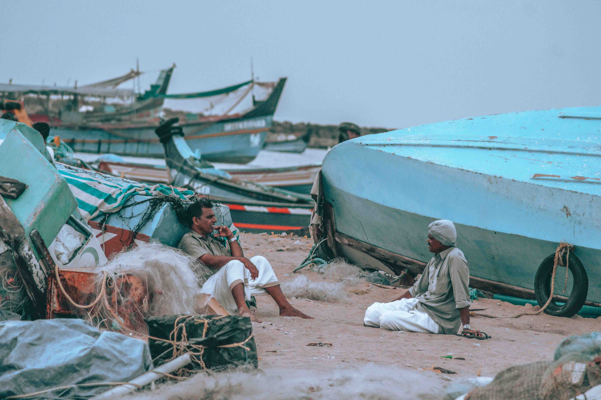
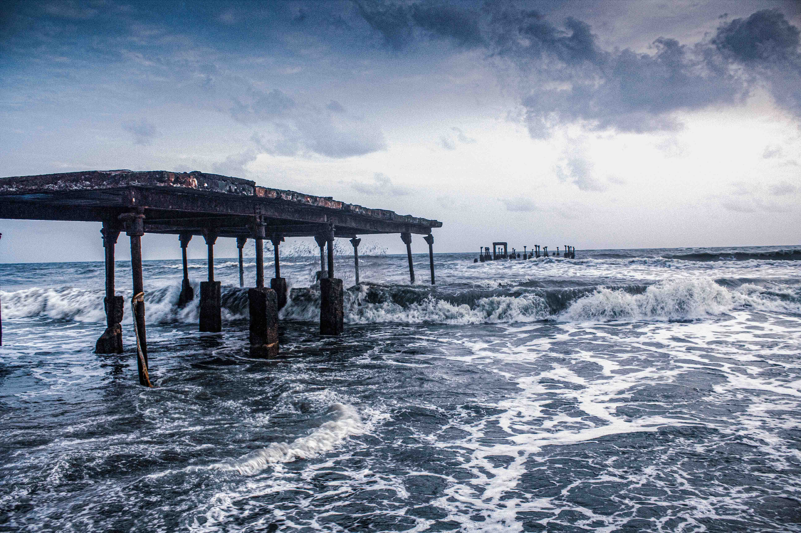

KOZHIKODE
Thusharagiri Fall cascades down as three waterfalls.
Backwaters in Kozhikode
Kozhippara Falls
Kakkayam Dam
Beypore , an ancient port town in Kozhikode formerly called as Vaypura / Vadaparappanad.
Thikkoti Light House


Previous
Next